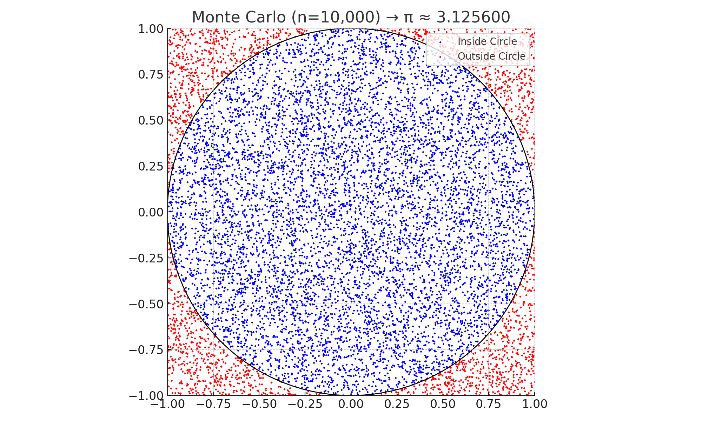
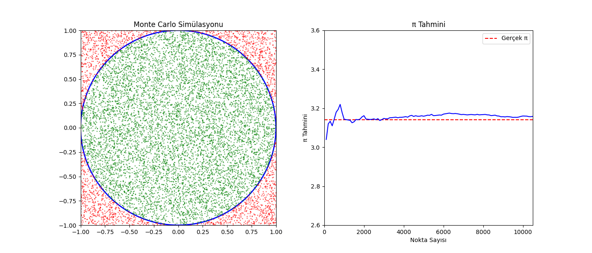

Problem 2
Estimating \(\pi\) with Monte Carlo Simulation Techniques
Overview
Monte Carlo methods rely on random sampling to approximate solutions to problems that may be deterministic in nature. One elegant use case is estimating the mathematical constant \(\pi\) using random events and geometric relationships.
This experiment introduces two different approaches to estimate \(\pi\):
- A geometric simulation involving random points inside a square and circle
- A probabilistic simulation inspired by Buffon’s Needle problem
Both methods allow us to explore randomness, convergence, and the power of simulation in numerical estimation.
Method 1: Area-Based Estimation Using a Unit Circle
Concept
Consider a square centered at the origin with side length 2. A circle of radius 1 is perfectly inscribed in the square.
- Area of the square = 4
- Area of the circle = \(\pi\)
- Therefore, the probability that a point randomly placed within the square also lies inside the circle is:
\(\pi / 4\)
Using this, we can estimate \(\pi\) with the formula:
$ \pi \approx 4 \times \left( \frac{\text{Number of points inside the circle}}{\text{Total number of points}} \right) $
Simulation Algorithm
- Generate \(n\) random coordinates in the square:
Each point has \(x, y \in [-1, 1]\) - For each point, determine whether it falls inside the circle:
Condition: \(x^2 + y^2 \leq 1\) - Count how many points satisfy this condition
- Estimate \(\pi\) using the derived proportion
Visualization Plan
- Scatterplot showing random points
- Points inside the circle: colored one way (e.g., blue)
- Points outside the circle but inside the square: different color (e.g., red)
- Overlaid boundary of the circle for visual reference
Observations
- Accuracy improves as the number of points increases
-
Convergence follows the Law of Large Numbers: $ \text{Estimation error} \propto \frac{1}{\sqrt{n}} $
-
While intuitive and simple, the convergence rate is relatively slow
Method 2: Buffon’s Needle – A Probabilistic \(\pi\) Estimation
Concept
Buffon's Needle is a probability-based technique that involves dropping a needle of length \(L\) on a floor with parallel lines spaced \(d\) units apart. The chance that the needle crosses one of the lines is:
$ P = \frac{2L}{d\pi} $
By simulating this experiment and tracking how many times the needle crosses a line, we can approximate \(\pi\) by solving for it:
$ \pi \approx \frac{2L \cdot n}{d \cdot h} $
Where:
- \(n\) = total number of needle drops
- \(h\) = number of crosses
- \(L\) = needle length
- \(d\) = line spacing (must be \(\geq L\))
Simulation Algorithm
- Choose constants:
- Needle length \(L\)
- Distance between lines \(d\) (where \(L \leq d\))
- Repeat the following \(n\) times:
- Randomly select the center of the needle's vertical position
- Randomly choose an angle \(\theta\) between \(0\) and \(\pi\)
-
Use geometry to determine whether the needle crosses a line: $ \text{Crosses if: } \frac{L}{2} \cdot \sin(\theta) \geq y_{\text{distance to nearest line}} $
-
Count the number of crossing events (\(h\))
- Estimate \(\pi\) with the formula above
Visualization Plan
- Plot several needles:
- Red: those that cross a line
- Blue: those that don’t
- Add horizontal grid lines to represent the line spacing
- Useful for visually validating crossing behavior
Observations
- This method is sensitive to trigonometric calculations
- Requires large samples for reasonable accuracy
- Offers a deeper probabilistic interpretation of \(\pi\)
Output Requirements
| Deliverable | Description |
|---|---|
| Simulation Code | Python/NumPy code to run both methods |
| Scatterplots | For circle-based point generation |
| Needle Drop Visuals | For Buffon’s simulation |
| \(\pi\) vs Sample Size Plot | Tracks convergence and error for both methods |
| Comparative Summary | Highlights strengths, weaknesses, and convergence |

Summary Comparison
| Method | Type | Convergence Rate | Visualization Clarity | Conceptual Depth |
|---|---|---|---|---|
| Unit Circle | Geometric Area | Moderate | Very High | High |
| Buffon’s Needle | Probabilistic | Slow | Moderate | Very High |
Best Practices for Simulation
- Always validate random sampling domains (e.g., angle between \(0\) and \(\pi\))
- Use sufficient trials (e.g., \(\geq 10,\!000\)) to see meaningful convergence
- Visualize results to confirm spatial or geometric logic
- Set random seed for reproducibility if needed
Key Takeaways
These simulations reinforce several core ideas:
- Simulation can approximate even complex constants like \(\pi\)
- Randomness and geometry can be blended for insight
- The Law of Large Numbers governs convergence
- Monte Carlo methods provide practical, educational tools in statistics and numerical analysis
Both approaches offer distinct learning opportunities — one via area comparison and one through probabilistic crossing — showing that even a simple constant like \(\pi\) connects deeply to randomness, geometry, and probability.
